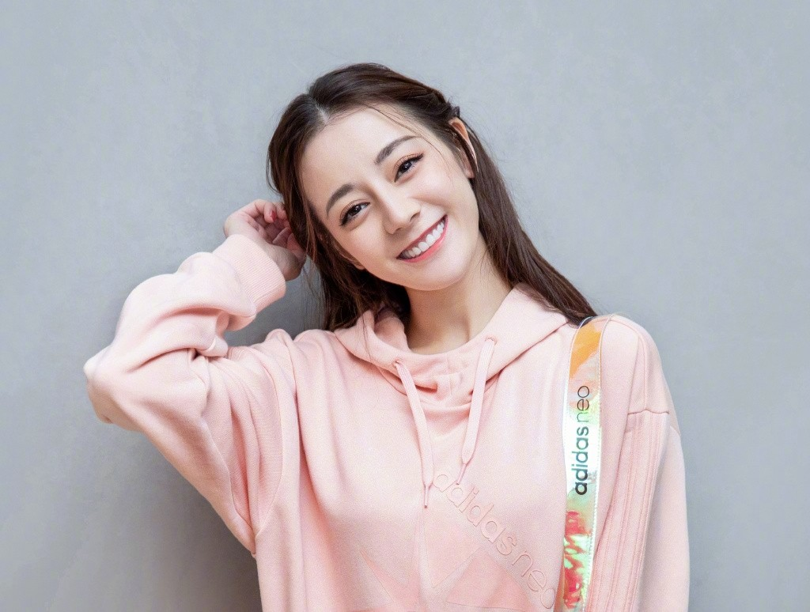
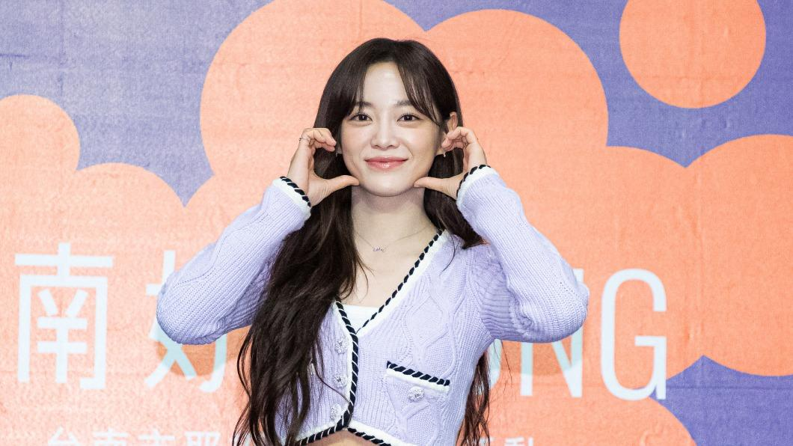
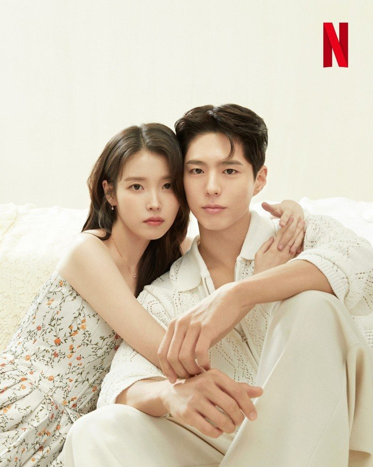
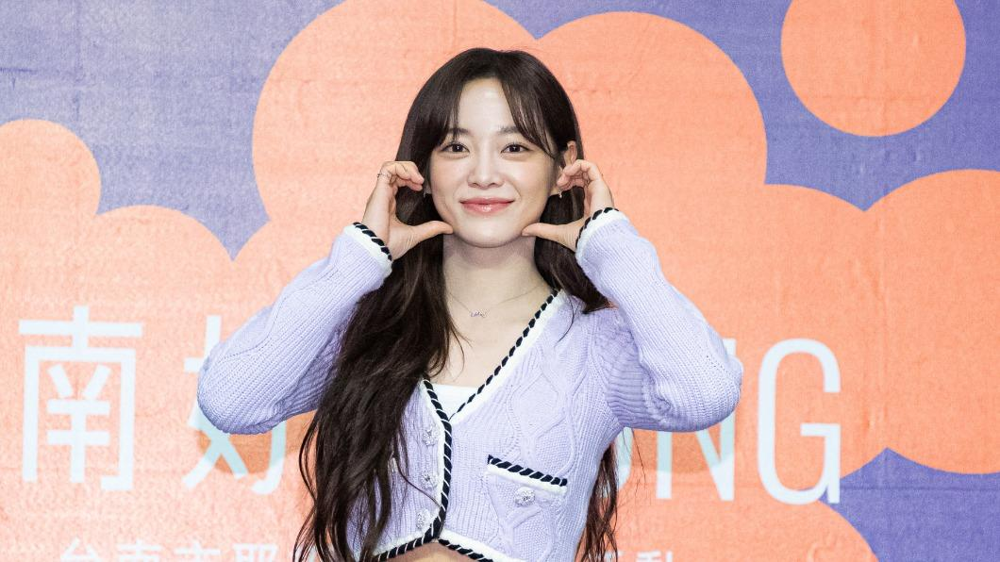
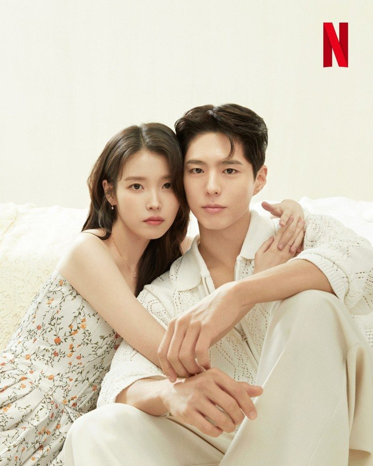
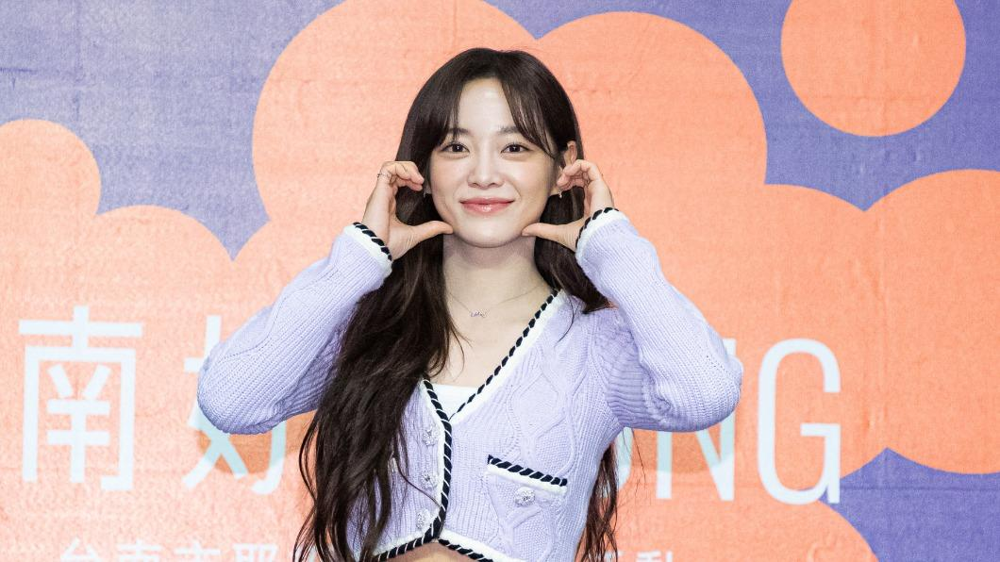
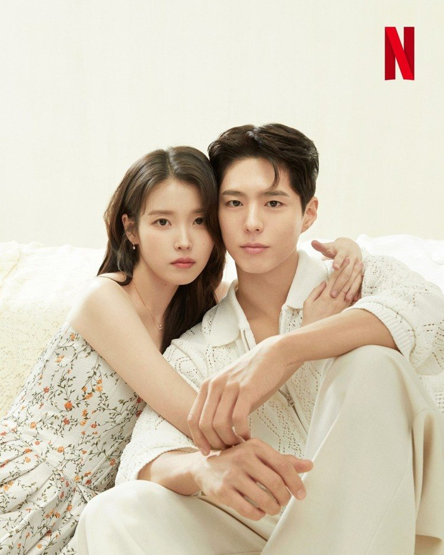

未來夢想
雖然我是讀資工系，之後可能會當工程師，但我並不局限於此。我也可以考警察當個資訊警察，或者是國防部資安作戰部隊/軍情局等。這是我的主業，因為我也想當個斜槓青年，副業可以當個 Youtuber、演員、歌手等，所以我現在要好好充實我自己。
加油！我一定可以的！
短期規劃目標
英檢中級考過
每天都要自律地練習英文。加油！
鋼琴檢定 5 級
時常要練琴。
網頁設計更專精
不懂的就看書、問 GPT、問老師。
我對目前階段的困擾
數學不會寫
問老師!?加油！!!我的數學
畫畫沒有臨感
想想自己想要畫什麼。
不要挑食
有點難😅
最有興趣的事
1. 喜愛我推的偶像

 





有時候心情不好時就會看我的偶像劇來鼓勵自己。
- 迪麗熱巴：「如果遇到了自己想做的事情，那就勇敢去做、大膽的付出吧。很多時候我們缺少的不是想法、不是能力，而是那份果斷和勇敢。」
- 周興哲：「我想做出，可以一直、一直重複放，都不會聽膩的歌。是一個讓他們一直想回去、重複聽的歌曲，這就是我做音樂的目的。」
- 金世正：「當你努力時機會不一定會來，但除了努力之外，你沒有其他方法讓機會來到身邊。」
- IU：「我們經常會因為跟別人不一樣而被疏遠或指責，但其實是這些不一樣造就了我們的獨一無二與美好價值。」
- 朴寶劍：「如果我在現實生活中遇到困難，會把挫敗、抑鬱、自責的感情昇華為笑容，努力正面積極地去思考。」
- 黃景瑜：「自己的事還是要自己負責，至少自己的人生，你要握在手裡。」
2. 鋼琴
目前已學過的歌曲：
- 周興哲的《想知道你在想什麼》
- 史考特·喬普林的《The Entertainer》
- 麥爾斯·泰勒的《Great Balls of Fire》
現在想要學的歌曲清單清單：
- YOASOBI 的《向夜晚奔去》跟《我推得孩子的主題曲(Ideo/Fate)》
- 周興哲的《想念你想我》跟《永不失聯的愛》